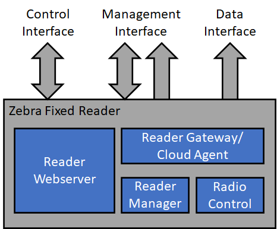

What is IoT Connector?¶
Zebra IoT Connector is a standard built-in feature inside RFID readers (FX9600, FX7500, and ATR7000) that makes reader deployment easy. It provides easy-to-use interface to manage, control readers as well as to extract tag data and events from readers. The interface is built on web-friendly protocols such as MQTT, REST and JSON-formatted data structures that can be leveraged by any web applications running on the cloud or on-premise.
Readers can push tag data and events to the cloud via MQTT. To push data to a local webserver, reader can also stream using HTTP Post. Applications can manage and control readers using either MQTT or REST interface.
System Overview¶
Interfaces¶
The Zebra IoT Connector feature provides four different interfaces as below, each can be configured to use a different endpoint of choice.
Management
Health
Control
Data
Management Interface¶
This interface is used to perform management actions on reader (e.g firmware update, getting and setting reader configuration).
This interface can be configured to use either MQTT (for cloud deployments) or REST APIs (for on-premise deployments).
When configured to use a MQTT endpoint, command and response topics must be specified to perform management functions. Refer RAW MQTT Payload Schemas on how to perform these operations over MQTT.
When using Local REST for management, please refer Local Deployment REST API Guide.
Health Interface¶
This interface is used to monitor health events from the reader (e.g Heartbeats (reader temperature, CPU, RAM, etc.), GPIO events, Errors and Warnings (CPU, RAM, Flash utilizations)).
This interface can be configured to use either MQTT (for cloud deployments) or HTTP Post (for on-premise deployments).
When configured for an MQTT endpoint, the management events topic must be used to consume the health events from the reader. Refer Health Events Format schema to get health events over MQTT or HTTP Post.
The health events can be configured at the time of deployment via configuration file or at run time using the Management Interface (e.g heartbeat fields and interval, errors and warnings limits and reporting interval, etc).
When Management Interface is configured to use a MQTT endpoint
get_configandset_configcommands are used for retriving and updating health events configuring. Refer RAW MQTT Payload Schemas on how to perform these operations over MQTT.When Management Interface is configured for Local REST
GET/PUT configAPIs are used for retriving and updating health events configuring, please refer Local Deployment REST API Guide.
Control Interface¶
This Interface is used to perform control actions on the reader (for example, configuring the radio mode, starting/stopping the tag reads).
This interface can be configured to use either MQTT (for cloud deployments) or REST APIs (for on-premise deployments).
When configured to use a MQTT endpoint, command and response topics must be specified to perform control functions. Refer RAW MQTT Payload Schemas on how to perform these operations over MQTT.
When using Local REST for control, please refer Local Deployment REST API Guide.
Data Interface¶
This interface is used to consume RFID tag events from the reader.
This interface can be configured to use either MQTT (for cloud deployments) or HTTP Post (for on-premise deployments).
When configured for an MQTT endpoint, the tag events topic must be used to consume the RFID tag data from the reader.
The Management Interface can be used to configure the tag identification mode at run time. Refer Introduction for supported configuration options.
When Management Interface is configured to use a MQTT endpoint
get_modeandset_modecommands are used for retriving and updating tag identification mode settings. Refer RAW MQTT Payload Schemas on how to perform these operations over MQTT.When Management Interface is configured for Local REST
GET/PUT modeAPIs are used for retriving and updating tag identification mode settings, please refer Local Deployment REST API Guide.
The data interface additionally supports following features.
Retention
Batching
Retention¶
Enables reader to buffer the tag events and stream data back to server in case of network issues or server failures. By default retention will be enabled and reader can retain most recent 150000 tag events and can stream data back to server at 500TPS.
Batching¶
Enables reader to group multiple tag events into single event based on the configuration. Batching reduces network usage as well as reader CPU usage.
The Retention and Batching features can be configured at the time of deployment via configuration file or at run time using the Management Interface.
When Management Interface is configured to use a MQTT endpoint
get_configandset_configcommands are used for retriving and updating retention and batching configuring. Refer RAW MQTT Payload Schemas on how to perform these operations over MQTT.When Management Interface is configured for Local REST
GET/PUT configAPIs are used for retriving and updating retention and batching configuring, please refer Local Deployment REST API Guide.
Important
Depending on how the Zebra IoT Connector interfaces are configured, there are three possible deployment modes as described in the chapter Introduction.
Reader Components¶
The reader contains a number of software components that enable Cloud Connect for RFID.
Reader Gateway¶
The Reader Gateway/Cloud Agent is the component responsible for connecting to the outside world. The Management and Control requests are received by the Reader Gateway/Cloud Agent and passed along to be handled by the appropiate component. The Reader Gateway/Cloud Agent also collects the tag data from the Radio Control and pushes them out on the Data interface.
Radio Control¶
The Radio Control component configures, controls, and maintains a connection to the RFID radio. Radio control receives the tag read events from the radio and sends them to the Reader Gateway/Cloud Agent which in turn passes it onto the Data interface.
Reader Manager¶
The Reader Manager is the component responsible for performing all reader configuration and management operations.
Reader Webserver¶
The Reader Webserver presents a web console to control the reader. When Cloud Connect Management and Control Interfaces are configured for Local REST mode, the Reader Webserver handles the REST requests before passing the requests to the Reader Gateway/Cloud Agent.